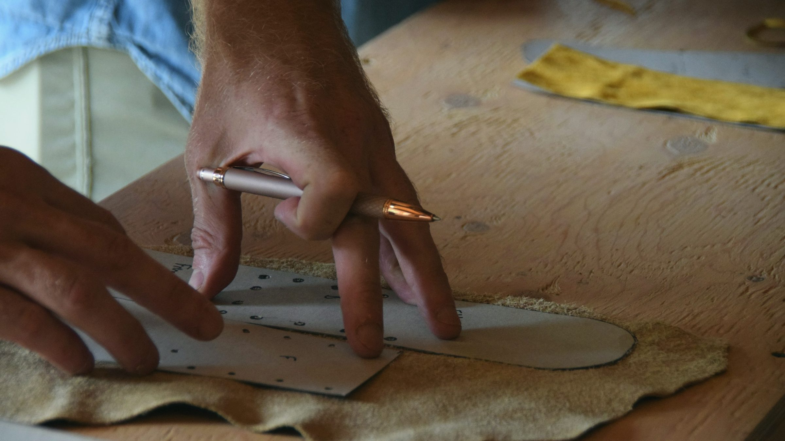

Chapter I
Genuine, nothing less.
We work only with genuine leather — never bonded, coated or imitation materials. Real leather breathes, softens and shapes itself to the person who wears it, and it is the only material we trust to age well.